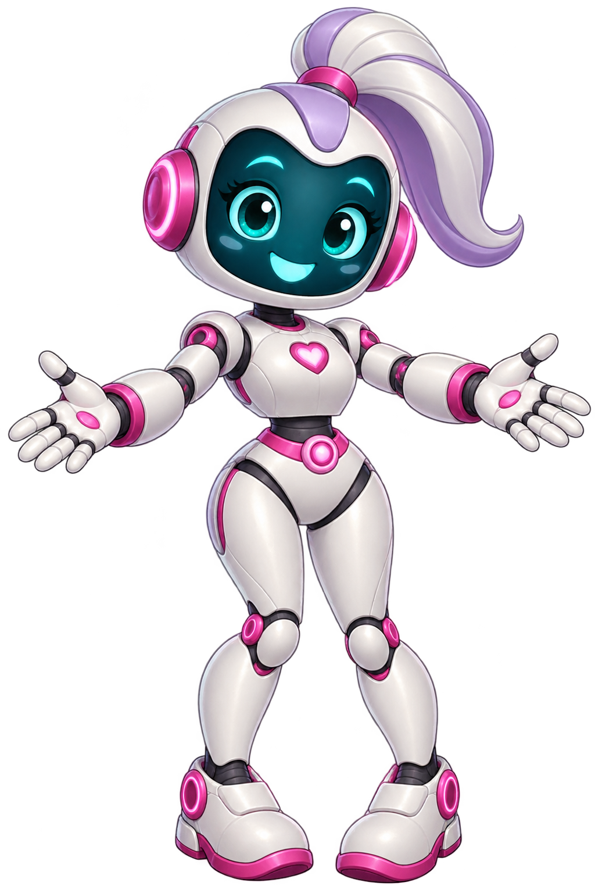

LLM Núcleo
Compõe enunciados, respostas e explicações contextualizadas.
Geração assistida de questões ENADE
com inteligência híbrida e revisão humana.

Compõe enunciados, respostas e explicações contextualizadas.
Constrói alternativas para compor cada questão.
Red flags automáticas e revisão pedagógica pelo professor.